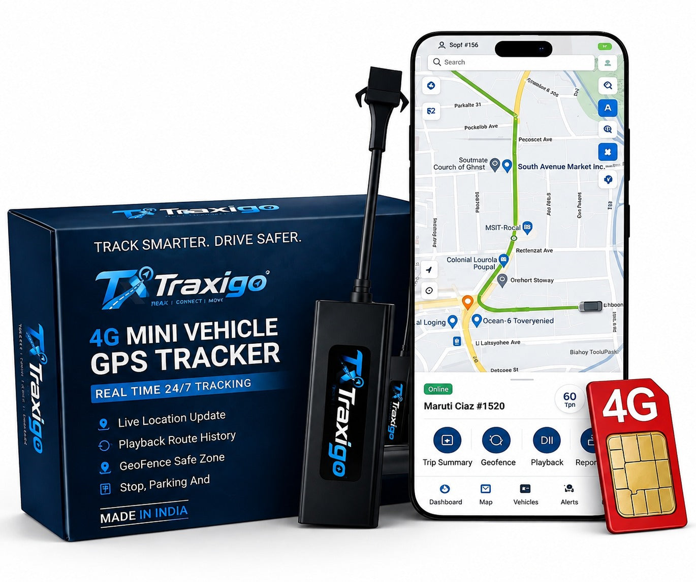

4G LTE

TRAXIGO.IN · ALL VEHICLES · 4G MINI
TraxiGo 4G GPS Tracker
Universal high-precision 4G GPS tracker engineered for all vehicle types—including cars, two-wheelers, delivery vans, and commercial transport fleets—with remote engine immobilization.
- Live 4G LTE location tracking with 5-second refresh
- Remote engine cutoff (Immobilizer) via mobile app
- Ignition ON/OFF alerts & 90-day route history playback
- Custom geofencing with instant breach notifications